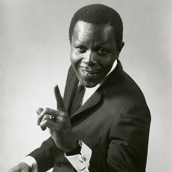
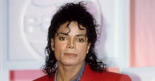

Smokey Robinson was a very successful artist at the time of Motown's existance. He influenced Berry Gordy because when Gordy met Smokey, he wanted to make a record label to be able to make artists like him big.
Marv Johnson was an artist during the mid 1900s. He influenced Berry and helped him reach his goals because he gave Gordy the opportunity to write and produce a song with him. This is what originally helped spread his name.
Berry Gordy influenced Michael Jackson because Gordy gave him his first real opportunity when he let the Jackson 5 be a part of Motown. Following Motown, Michael Jackson became on of the most famous artists of all time.
In 1959, Berry Gordy founded one of the most famous record companies of all time with just an $800 loan from his father. Throughout its existence, Motown had some of the most famous African American artists of all time start their carreer there. This included, Smokey Robinson, Michael Jackson, Diana Ross, and Stevie Wonder! This was so important because Motown was one of the only places where African Americans ould be able to create music with advanced equipment and have their music spread all over the world! Later, Motown moved to Los Angeles and it was later sold by Gordy. Even though Motown is gone, its story is still heard today all over the world on the radio, on CDs, or even "Motown the Musical".